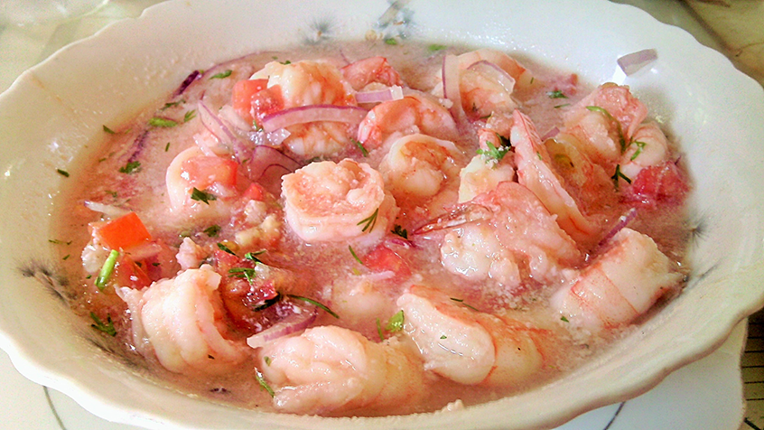

Ceviche é Camarón

Description
Warning: this dish can only be described in spanish.
Un plato oriundo de Ecuador, aunque también tiene su versión mexicana y peruana.
Ingredients
- Camarón
- Cebollas
- Tomate
- Limón
- Puro sabor nacional
Instructions
- Get the recipe on Google.
- Prepare the Ceviche é Camarón.
- Find out that the recipe ain't that good.
- Come and visit Ecuador, travel to Esmeraldas and buy a really good Ceviche.
Back